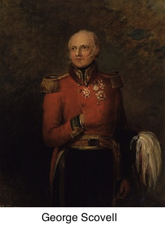

Le Grand Chiffre de Paris - les chiffres de l'armée napoléonienne
En ce début de XIXè siècle, la France est incontestablement le pays le plus puissant d'Europe. La politique expansionniste de Napoléon semble sans limites. La péninsule ibérique est, en 1807, le prochain objectif de l'empereur. Le Portugal est un allié historique du Royaume-Uni, et il refuse d'appliquer le blocus continental. Napoléon obtient l'autorisation de l'Espagne de laisser une armée française traverser les Pyrénées pour aller châtier les Portugais. C'est chose faite en octobre 1807.
Au même moment, des troubles secouent la monarchie espagnole. Un coup d'État renverse le roi Charles IV. Son instigateur n'est autre que son propre fils, qui devient Ferdinand VII. Père et fils se disputent le trône sous l'arbitrage de Napoléon. Ce dernier sent qu'il peut tirer profit de la situation pour mettre la main sur l'Espagne. Lors de la conférence de Bayonne, en mai 1808, il force les deux souverains à abdiquer au profit de son propre frère, Joseph Napoléon, le nouveau roi Joseph d'Espagne.
Ces événements provoquèrent un soulèvement de la population espagnole. A Madrid, à Séville, à Saragosse, l'armée française est attaquée par la rébellion locale. De plus, des troupes britanniques commandées par le duc de Wellington arrivent au Portugal à l'été 1808 pour défendre leur allié. Pendant les six ans que va durer cette campagne d'Espagne, l'armée impériale aura deux ennemis à affronter : l'armée régulière britannique et portugaise, et la guérilla espagnole.
Depuis Louis XIV et son chiffre mis au point par les frères Rossignol, les français ont une bonne maîtrise des procédés de chiffrement. Ce savoir-faire ne s'est pas perdu avec la Révolution, mais il est difficile à mettre en oeuvre lors du début de cette campagne d'Espagne. La guerre est faite de mouvements de troupes incessants, et il est bien difficile de transmettre de façon sûre d'encombrantes tables chiffrées à chaque État-major. De plus, alors qu'elle utilisait la télégraphie optique (chaque relais étant visible du suivant) pour ses campagnes précédentes, l'armée impériale ne peut le faire en Espagne : ces relais seraient bien trop susceptibles d'être attaqués par la guérilla. Les courriers sont donc transmis par des messagers à chevaux. Ils sont écrits parfois en clair, parfois chiffrés à l'aide d'un code appelé "petit chiffre" : il autorise une cinquantaine de substitutions et ne peut cacher un secret au-delà de quelques heures.
L'événement décisif dans la mise en place d'un Grand Chiffre pour toutes les armées françaises de la péninsule est sans doute la capture du général Franceschi, en juin 1809. Il portait sur lui une lettre non chiffrée du maréchal Soult au roi d'Espagne. A la suite de cet événement, les troupes de l'empereur changent d'abord le protocole d'envoi des messages. Plutôt que de les confier à des officiers en uniforme, ils utilisent des "afrancesados", espagnols acquis à la cause de Napoléon, pour les véhiculer. Ces afrancesados attirent moins l'attention; de plus, les messages sont envoyés deux ou trois fois pour être sûr qu'ils atteignent leur destinataire. Bien sûr, cela multiplie aussi le risque qu'ils soient interceptés et lus, d'où la nécessité de les chiffrer.
Le premier à introduire un chiffre cohérent pour tous les bataillons sous ses ordres est le maréchal Marmont, lorsqu'il prend la tête de l'armée du Portugal en mai 1811. Le chiffre, dit chiffre de l'armée du Portugal, qu'il met en place compte 150 groupes codiques qu'on substitue à des lettres ou des mots. C'est encore trop peu pour résister aux analyses de l'armée britannique.
Wellington, en effet, avait compris l'intérêt d'avoir accès aux communications françaises. Il a confié au major George Scovell, un linguiste, la création d'un groupe dédié à l'interception et au décryptement des messages français. Scovell a appris les bases de la cryptographie dans un livre intitulé The Art of Deciphering, par David Conradus. On ne sait rien de son auteur, et ce livre ne fut en réalité jamais publié, mais juste recopié et transmis ainsi jusque Scovell. Il reste que The Art of Deciphering contient les techniques de base du décryptement, comme la méthode d'analyse des fréquences, ainsi que des chapitres consacrés aux particularités des principales langues européennes. C'est armé de ce savoir que Scovell vient à bout du chiffre de l'Armée du Portugal.
L'État-major français déploie finalement son nouveau procédé de chiffrement à la toute fin de l'année 1811. Le Grand Chiffre de Paris, puisqu'il s'appelle ainsi, est un code désordonné : 1400 groupes codiques correspondent à des lettres, des syllabes, des mots, des expressions. Il est constitué de deux parties. Dans la "partie chiffrante", ces lettres, syllabes, mots, expressions sont classés par ordre alphabétique, tandis que les groupes de chiffres qui leur correspondent se trouvent dans un ordre aléatoire. Dans la "partie déchiffrante", les groupes codique sont classés par ordre croissant de 1 à 1400 avec leur signification en regard. Une même lettre (par exemple le E, lettre la plus fréquente en français) peut être remplacée par plusieurs nombres différents, ceci afin de rendre plus délicate l'analyse des fréquences.
Le Grand Chiffre de Paris est basé sur des tables diplomatiques établies vers 1750. Ces tables contenaient 1200 groupes codiques, dont certains sont inutiles dans le cadre de la campagne d'Espagne (par exemple, 490 signifie Stockholm). Pour les groupes codiques de 1200 à 1400 ont été ajoutés des termes spécifiques au contexte de la guerre péninsulaire. Pour illustrer comment fonctionne ce chiffre, voyons les différents méthodes pour chiffrer SEVILLE :
- 1359, car SEVILLE est un mot qui apparaît dans la table;
- 173-90-1085-711-1118-521-431, en remplaçant chaque lettre de SEVILLE par un de ses équivalents dans la table. Remarquons que les deux L sont chiffrés différemment, de même que les deux E.
- 189-10071, en coupant en SE/VILLE, chacun de deux mots étant dans la table;
- 1181-1085-631-925, en coupant en SE/V/IL/LE.
S'il est correctement utilisé, ce chiffre est extrêmement difficile à casser! Mais il est aussi assez lourd à employer, et les français ont pris une mauvaise habitude : ils envoient leurs messages en alternant texte clair et texte chiffré. Le contexte donne alors beaucoup d'indications sur ce que peut être le texte chiffré, et il aide beaucoup au déchiffrement. Prenons l'exemple du message suivant, envoyé par le roi Joseph d'Espagne au maréchal Marmont :
Le contexte, les déchiffrements antérieurs, amènent assez facilement à
A force d'abnégation (il y a tout de même 1400 groupes codiques à trouver), grâce à l'afflux de messages interceptés (les français, sûrs de leur chiffre, prennent de moins en moins de précautions pour transmettre leurs messages), Scovell parvient au cours de l'année 1812 à déchiffrer complètement le Grand Chiffre. Les indications qu'il fournit à Wellington à la fois sur la réorganisation des troupes françaises, sur leur nombre, leurs intentions, sont extrêmement précieuses, et plusieurs initiatives de Wellington semblent venir directement des déchiffrements de Scovell, comme la bataille de Salamanque en juillet 1812. Finalement, lors de la bataille de Vitoria, en juillet 1813, préparée elle aussi grâce aux informations de Scovell, les tables du Grand Chiffre sont capturées par les britanniques.

L'histoire du Grand Chiffre révèle un aspect marquant de la cryptographie au cours des siècles, vérifié également lors de l'affaire de Marie Stuart ou lors de l'utilisation de la machine Enigma par les allemands : avoir une confiance aveugle en un moyen de chiffrement, l'utiliser sans prendre les précautions nécessaires est pire que de communiquer en clair!
Les informations de cette page sont, pour la plupart, extraites de l'excellent livre The man who broke Napoleon's code de Mark Urban.